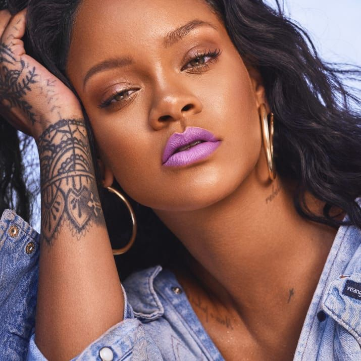
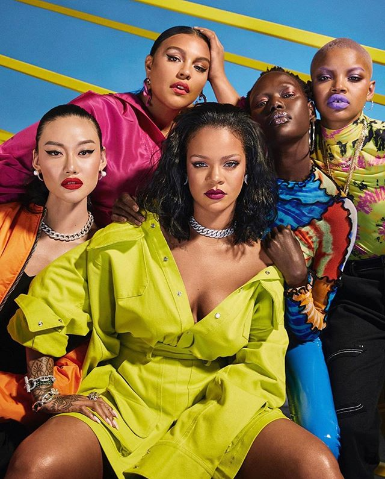
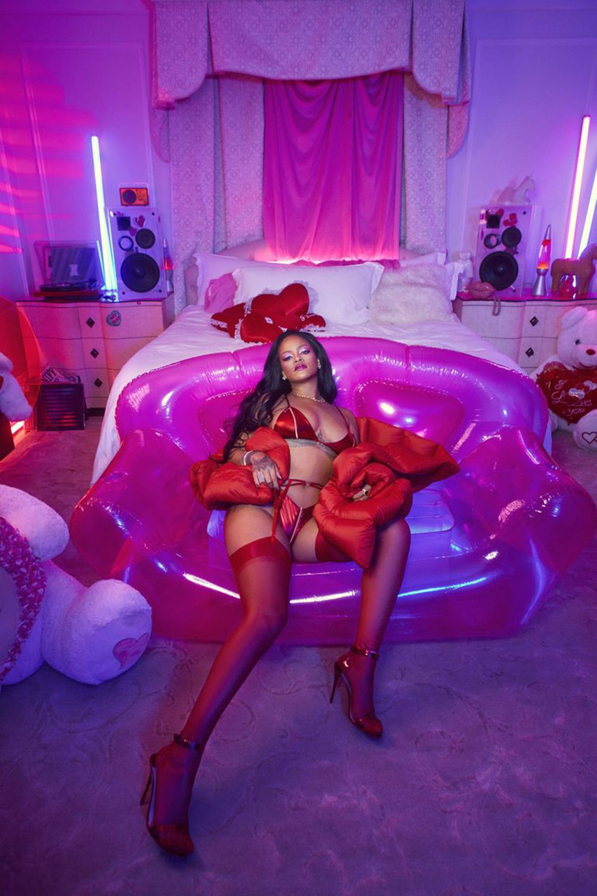
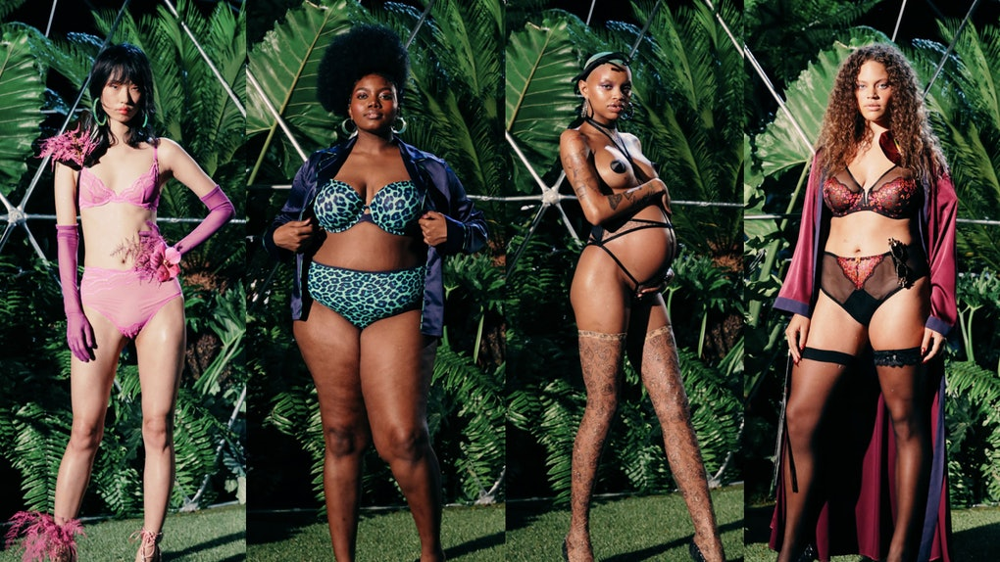

Nasceu no dia 20/02/1988, em Barbadoas, uma ilha localizada no Caribe. Aos 32 anos é a cantora mais rica do mundo com um patrimônio de 600 milhões de dólares em sua conta bancária. Rihanna começou a cantar na escola aos 9 anos.Aos 15 anos foi apresentada ao produtor musical Evan Rogers, que estava de férias em Barbados.Foi feita uma audição e um ano depois Rihanna já estava em Nova Iorque gravando músicas que foram enviadas para o então presidente da Def Jam Records, Jay-Z, junto com um vídeo da apresentação que Rihanna fezno colégio cantando “Hero” da cantora Mariah Carey. O desempenho na apresentação rendeu a assinatura do contrato com a gravadora Def Jam Records e lançamento do seu primeiro álbum Music of The Sun. Ela começou sua carreira em 2005, mas explodiu mundialmente no ano de 2007 com hit umbrella.
Vendeu mais de 54 milhões de álbuns e 210 milhões de singles,e em 2011 foi considerada a artista de todos os tempos que mais vendeu a nível digital.A cantora conseguiu colocar catorze singles no topo da Billboard Hot 100 "SOS", "Umbrella","Take a Bow", "Disturbia", "Live Your Life","Rude Boy", "Love the Way You Lie", "What's My Name?", "Only Girl (In the World)", S&M", "We Found Love", "Diamonds" , "The Monster" e "Work" — sendo a artista com mais topos atingidos desde no início da década de 2000,e do século XXI na tabela musical americana Billboard Hot 100, que avalia as cem músicas mais vendidas.

Ela não cansa de supreender! No dia 31 julho lançou sua nova linha, agora focada na área de skin care com 3 produtos para limpeza do rosto após o uso da maquiagem. Lucrando ao todo mais de 3 bilhões de reais.
A rainha de barbados foi a primeira mulher negra a comandar uma grife de roupas de luxo para a Louis Vuitton.
todos os modelos de roupas possuí tamanhos do P ao plus size, para caber em todos os corpos.

todos os modelos de roupas possuí um unico tamanho plus size, para caber em todos os corpos.
E a estrela também possuí uma marca de lingerie.

Que se destaca pelos seus diferentes tipos de tamanho, e pela diversidade de modelos que estampam a capa das weebs. E com essa diversidade acaba diminuindo o esteriótipos de modelos de capa de revista.

Mesmo nesse ano de crise, ela conseguiu proporcionar seu show de divulgação de sua marca fde peças íntimas.
Foram feitos testes de covid em todos os funcionários e modelos, tudo com organização e ordem.
conhecida por sua marca ter roupas para grandes e pequenos corpos, seu show fez enorme sucessopor ter modelos de grande diversidade de raça e peso.
Sem dúvida rihanna foi a cantora que mais faturou de 2017 pra cá, se tornando a cantora mais fica do mundo com patrimônios que ultrapassam a margem de 1 bilhão de dólares, ultrapassando Beyoncé e Madona. Fazendo valer seu nome que é sinônimo de famosa.